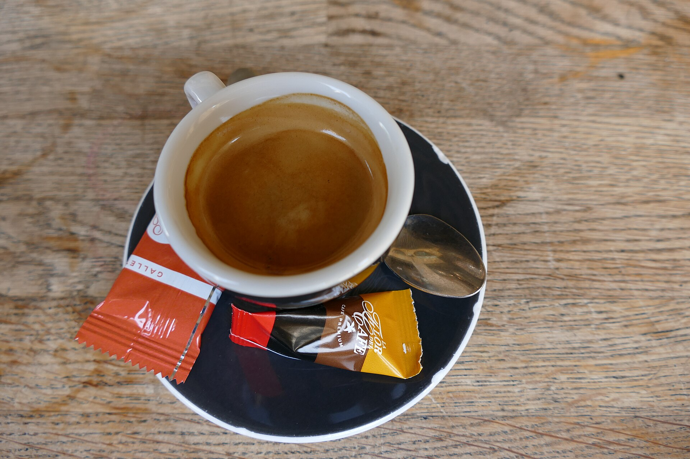
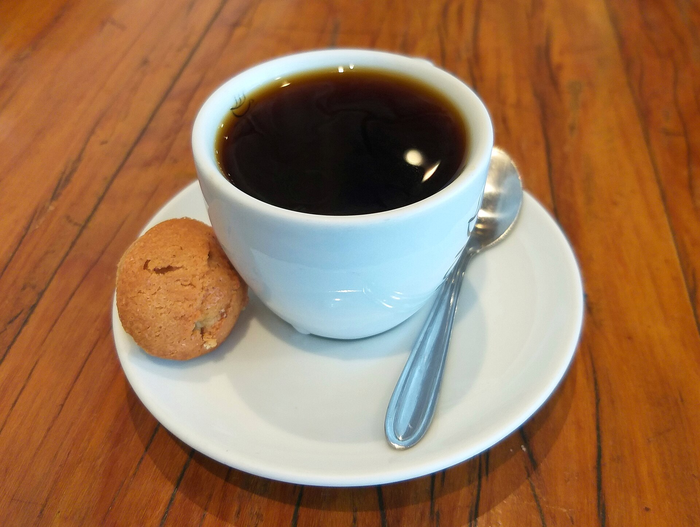
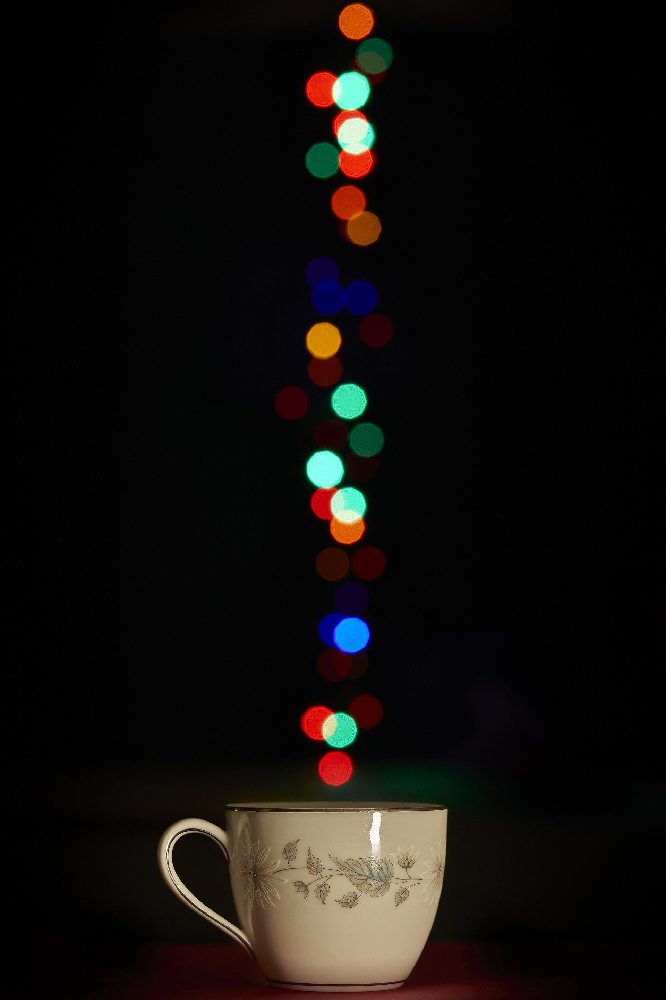
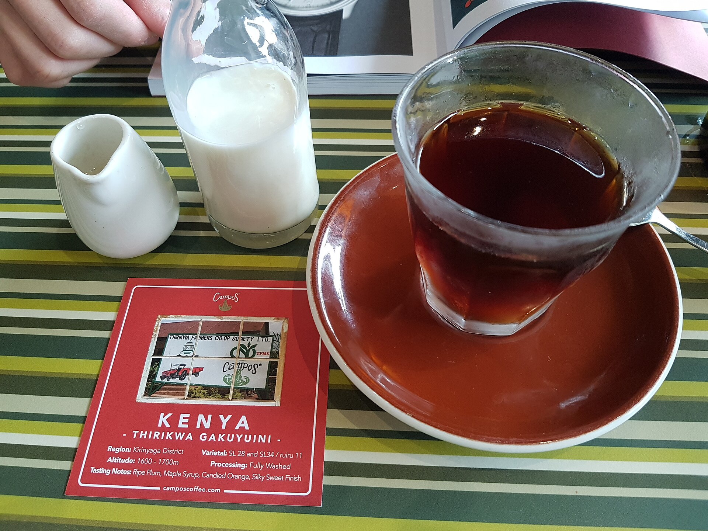
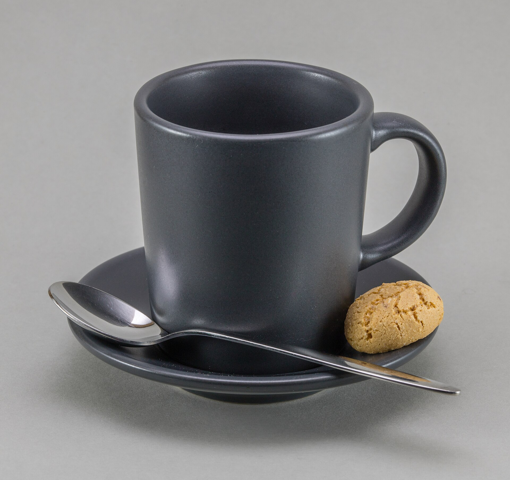
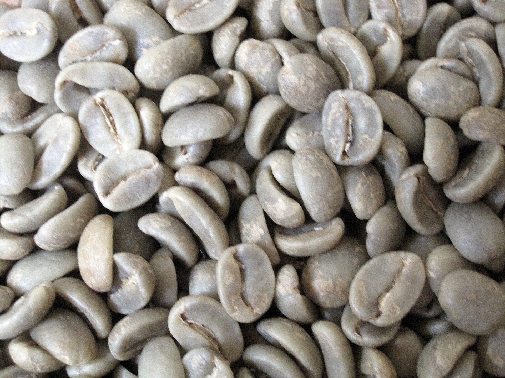
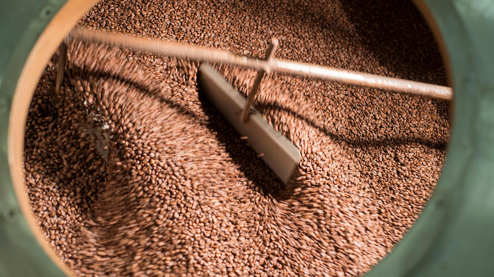

Menu pagi ini
Harga sudah termasuk pajak. Biji yang sedang di drum bisa dicoba sebagai seduhan manual.
-

Espresso22.000
Dua shot dari biji Puntang, sangrai medium, 36 ml.
-

Kopi susu gula aren28.000
Espresso, susu segar, gula aren cair. Panas atau dengan es.
-

V60 single origin35.000
Seduh manual, 15 g biji Ciwidey, 250 ml. Tanya biji minggu ini.
-

Cappuccino30.000
Espresso, susu dikukus sampai berbusa tipis, 180 ml.
-

Cold brew32.000
Direndam delapan belas jam, disaring dua kali, satu bongkah es.
-

Tubruk panggang gelap20.000
Biji Pangalengan, digiling kasar, diseduh langsung di cangkir.
Bar, papan menu, dan satu drum
Semua seduhan lewat bar ini. Papan kapur di belakang mencatat biji yang sedang dipakai, dan rak di atasnya menyimpan alat yang kami pakai hari itu. Drum sangrai ada di ruang belakang, jadi wangi biji baru sampai ke kursi Anda.
Empat belas kursi saja, supaya barista masih bisa mengobrol. Ruang belakang dipakai untuk cupping enam orang, Selasa dan Jumat setelah drum selesai.
Dari karung ke cangkir
Tiga tahap yang bisa Anda lihat sendiri kalau datang pagi. Drum menyala pukul tujuh, jadi biji yang baru selesai masih hangat saat diseduh.
-

Pilih
Biji mentah disortir tangan, dibuang yang pecah dan yang terlalu kecil. Satu karung enam puluh kilo jadi lima puluh delapan kilo bersih.
-

Sangrai
Dua belas menit di drum, suhu diturunkan di menit kedelapan. Tiap batch dicatat di buku, termasuk yang gagal.
-
Seduh
Biji diistirahatkan tiga hari dulu sebelum dipakai. Sesudah itu baru masuk grinder dan cangkir Anda.
Resep seduh yang kami pakai
Pilih alatnya, angkanya sama dengan yang ditempel di bar. Rasio mengikuti satu cangkir 250 ml.
- Biji
- 15 g
- Air
- 250 ml
- Suhu
- 92 °C
- Waktu
- 2 menit 45 detik
Ambil meja pagi
Kami buka Selasa sampai Minggu, pukul enam sampai lima sore. Senin tutup, termasuk hari libur.
Jl. Cigadung Raya 14, Bandung
0821 1900 0614